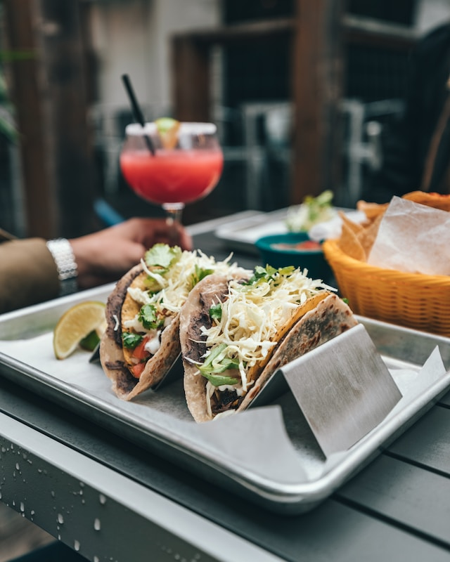

Tacos

Description
A hispanic dish consisting of a flour or corn tortilla around ground beef, pork, chicken, steak, shrimp or any other protein you'd like to use. Normally, it is topped with shredded cheese, lettuce and tomatoes and spicy sauce.
Ingredients
your choice of seasoning or store bought taco seasoning
Steps
1. Preheat oven to 350 degrees. Heat corn tortillas for 15 minutes. If using flour tortillas, cover in paper towel and microwave on safe plate for 30 seconds.
2. Brown protein in skillet and add 1/2 cup of water and seasoning. Bring to boil and then take off heat.
3. Fill Taco shells with cooked protein and add desired toppings. Enjoy!